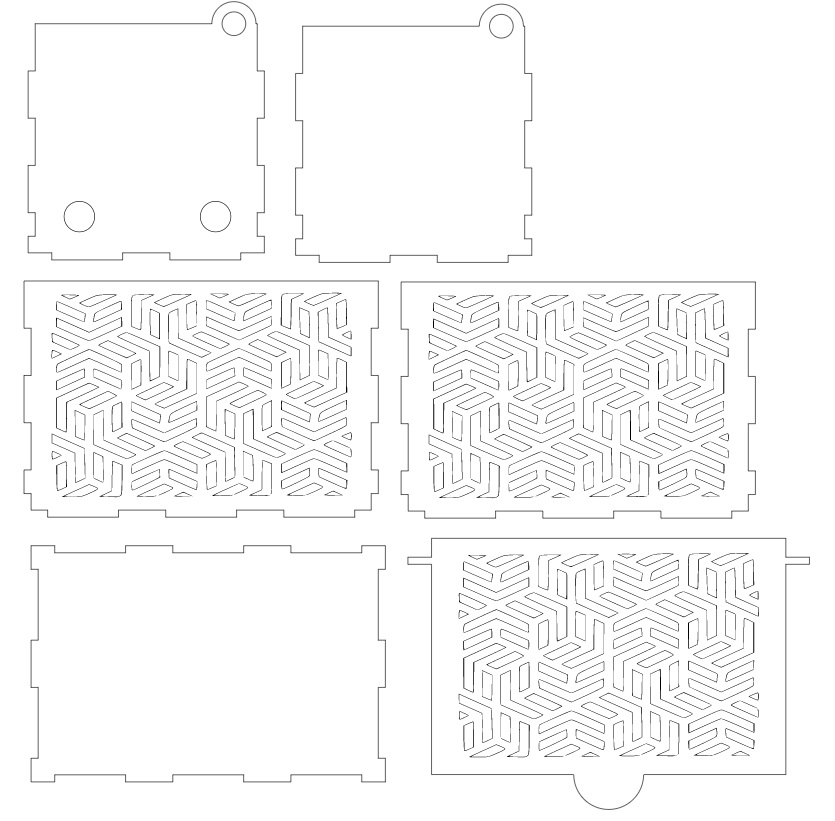
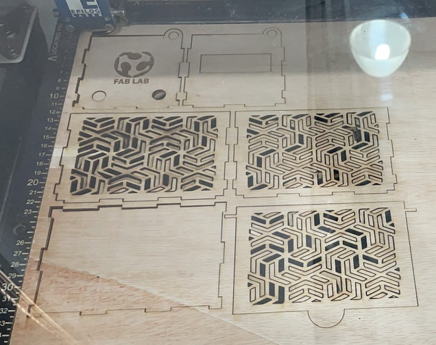
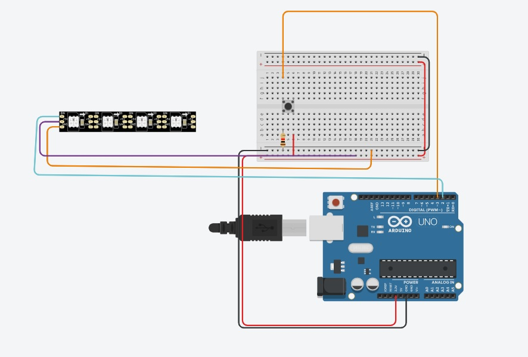
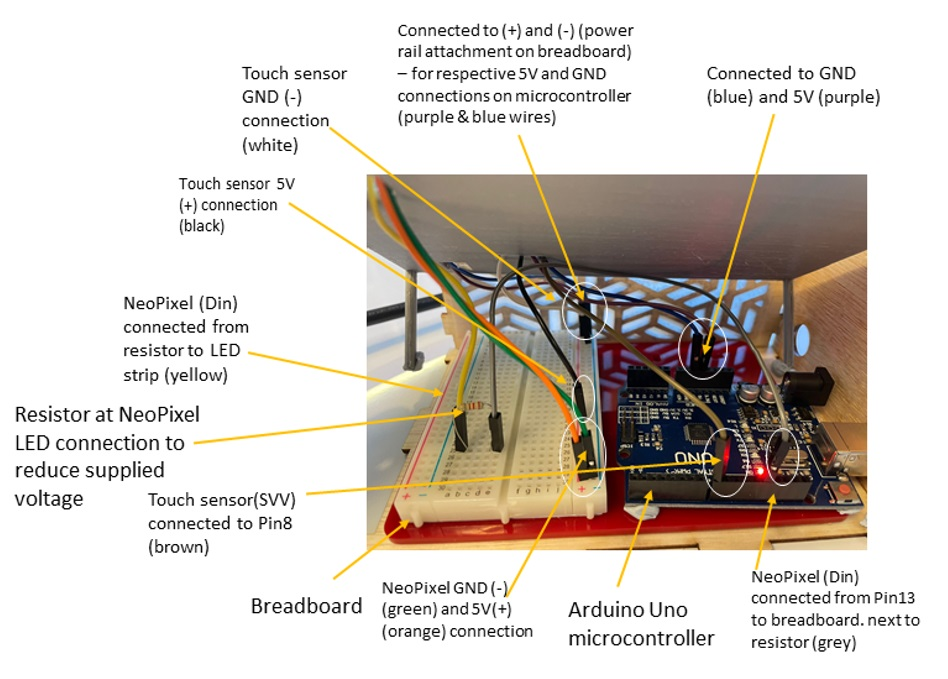
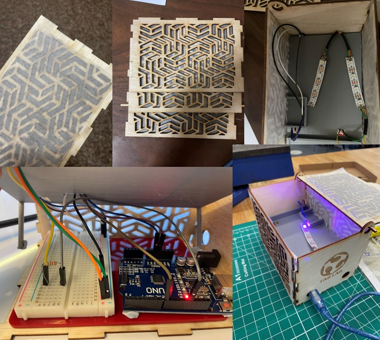

For this module’s final project, I decided to make a mood lamp, using NeoPixel strips as the output device and a touch sensor as the input device. During the planning stage, I intended to add a PIR motion sensor as well as an I2C LCD to the lamp for added functionality. However, when testing the code for the embedded system, the 2 devices did not work as intended and were scrapped from the final design.
Here is the video of the designing, assembling, and testing process, along with the slide describing the functionality and circuit design.
When designing the casing for the lamp, I decided to go with a design similar to the music box but with a more intricate vector design. Here is what the final design looked like after creating the 3D model on Fusion360. The dimensions of the casing are 150mm x 100mm x 100mm.
The sketches of each of the faces were then saved as DXF files and imported over to Inkscape so that the vector design can be incorporated to the casing sketches. Here is what the final vector design looks like.
The design was then saved as an SVG before being imported to CorelDRAW to add the graphics for engraving and make any final edits before laser cutting. After laser cutting was complete, using 3mm plywood, these were the pieces obtained. The power was set to 70% for cutting and 20% for engraving, while the speed was set at 30% and 80% respectively. It is to be noted that the top right piece was recut without the rectangular hole in the centre due to the IC2 LCD being scrapped.
The 3D printed component of the lamp is the mount for the various components. Due to the PIR motion sensor and I2C LCD being scrapped, there are 2 sections of the mount that were not utilised, but the mount was still able to serve as a base for the NeoPixel strips and effectively hide the Arduino Uno board, breadboard and wiring. Below is the finalised 3D model designed on Fusion360, the sliced model on CURA, and the end product after 3D printing. The dimensions of the mount were 145mm x 95mm x 37mm and the total print time was 2.5 hours.
Here are the settings used for 3D printing the mount:
This circuit was designed using Tinkercad and served as a reference for creating the actual circuit design. However, a touch sensor device was not available Tinkercad, so a push button was used as a replacement instead.
Below is the finalised circuit design.
First, I added baking paper to the inner side of the pieces with the holes, so that the inside of the lamp won’t be able to be seen from the outside. Next, I unscrewed the Arduino Uno from it’s base so that I could properly orientate it to face the USB port to the back of the lamp. The Arduino board and breadboard were glued to the base of the lamp. Then, the wiring, touch sensor and neo pixel lamp were incorporated into the circuit and covered with the mount, and two sides of the lamp were glued into place.
Then, I moved onto testing the new code to see whether the lamp was functioning properly.
Click here to see the code used.
Here is what the product looked like during the testing stage. The LED colour was set to purple (red=200, green=0, blue=255) and they were set to light up for 3 cycles before needing an input signal from the touch sensor to restart the cycles.
Here is what the final product looks like after the last two sides were glued into place and covered with the lid. Some changes were made towards the end to improve the functionality of the design. The microcontroller was hot glued into place so that it would not move around when the USB cable is being attached, and the touch sensor was moved to the exterior of the lamp and glued into place for easier access.
| I/O Devices | The devices on their own could function properly. However, the code could not work to make the motion sensor change the colors of the LEDs, and could only turn them on. The LCD also had issues displaying text, even after the hex address was found. This led to both the devices being scrapped. In hindsight, the devices should have been tested together before planning the lamp design, and not individually. |
| 3D Printed Mount | The mount ended up being slightly too large, causing the lamp casing to not fit together properly. This is because the 3mm thickness of the casing was not taken into account. The correct size of the casing should have been 142mm for the length and 92mm for the width. |
| Lamp Lid | A detachable lid should have been used instead of one that flips open. This would have made it easier to access and adjust the components inside of the lamp. |
| NeoPixel Strip | The NeoPixel strips should have been laid out closer to the edge of the mount for maximum light intensity. |
| Tocuh Sensor | The touch sensor could have been mounted in a way that it wasn’t too far into the box and also held in place properly. The hole should have been cut larger for easier access to the center of the sensor. |
| Arduino Board | The hole used for the microcontroller could have been larger so that it would be easier to insert the USB cable, or the microcontroller could have been mounted in a way that the port was nicely fit into the hole at the back of the lamp. For a nicer fit, a hole the same size as the port could be used instead. |
| Code | The code I made had an issue which did not allow the touch sensor to change the color of the lights. I should have added different states in the code, which coded for a different color in each state. For example, state 1,2 & 3 could be different colors and state 0 would have all the lights off. Each time the touch sensor is activated, it will cause the state to increase by +1 and will go back to state 0 if state > 3. A ColorWipe() function could also be added to make the LEDs light up one at a time across the strip for a nicer looking effect. |